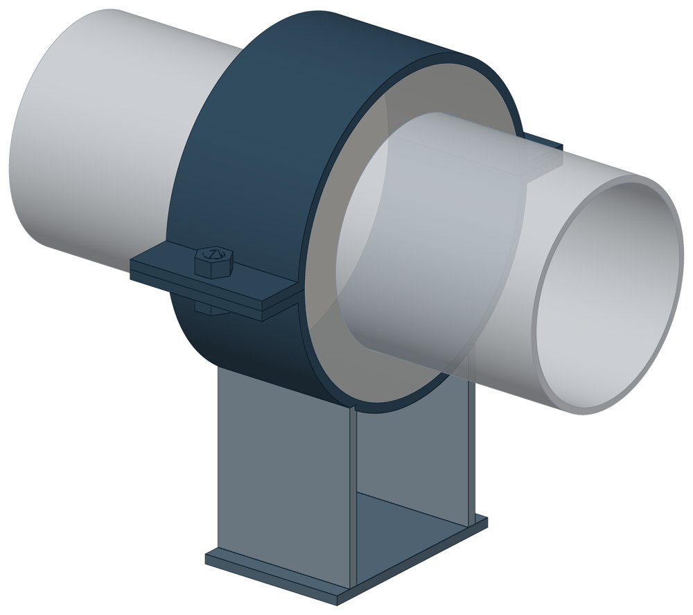

Опоры хомутовые УГ 15-01-00
Серия 5.905-18.05. Dн 57–1020 мм, масса 3,27–17,72 кг.

- Диаметр трубы Dн
- 57–1020 мм
- Документ
- Серия 5.905-18.05
- Исполнений
- 14
- Масса
- 3,27–17,72 кг
- 3D-модели
- у всех исполнений (условные: общий вид по габаритам)
Таблица исполнений УГ 15-01-00
| Обозначение | Код ПРОМБУРГ | Думм | Высота ножкимм | Радиус Rмм | Ширинамм | Длинамм | Массакг | 3D |
|---|---|---|---|---|---|---|---|---|
| УГ15.01.00.00 | ПБ-УГ15-0057-1 | 50 | 40 | 56 | 172 | 90 | 3,27 | 3D |
| УГ15.01.00.01 | ПБ-УГ15-0076-1 | 65 | 90 | 66 | 192 | 90 | 3,75 | 3D |
| УГ15.01.00.02 | ПБ-УГ15-0089-1 | 80 | 90 | 72 | 204 | 90 | 4,93 | 3D |
| УГ15.01.00.03 | ПБ-УГ15-0108-1 | 100 | 90 | 85 | 230 | 90 | 4,22 | 3D |
| УГ15.01.00.04 | ПБ-УГ15-0133-1 | 125 | 90 | 94 | 248 | 90 | 4,83 | 3D |
| УГ15.01.00.05 | ПБ-УГ15-0159-1 | 150 | 90 | 107 | 274 | 90 | 5,27 | 3D |
| УГ15.01.00.06 | ПБ-УГ15-0219-1 | 200 | 90 | 137 | 334 | 90 | 7,23 | 3D |
| УГ15.01.00.07 | ПБ-УГ15-0273-1 | 250 | 90 | 164 | 388 | 90 | 8,13 | 3D |
| УГ15.01.00.08 | ПБ-УГ15-0325-1 | 300 | 90 | 190 | 440 | 90 | 9,03 | 3D |
| УГ15.01.00.09 | ПБ-УГ15-0426-1 | 400 | 90 | 241 | 542 | 90 | 10,72 | 3D |
| УГ 15.01.00.10 | ПБ-УГ15-0530-1 | 500 | 90 | 293 | 646 | 90 | 11,98 | 3D |
| УГ15.01.00.11 | ПБ-УГ15-0630-1 | 600 | 90 | 343 | 746 | 90 | 12,87 | 3D |
| УГ15.01.00.12 | ПБ-УГ15-0820-1 | 800 | 90 | 438 | 936 | 90 | 15,74 | 3D |
| УГ15.01.00.13 | ПБ-УГ15-1020-1 | 1000 | 90 | 538 | 1136 | 90 | 17,72 | 3D |
Чтобы заказать, сообщите обозначение и код ПРОМБУРГ: +7 (499) 325-51-35, promburg@yandex.ru.
Нормативные документы
- Серия 5.905-18.05 Узлы и детали крепления газопроводов — документ, по которому изготавливается изделие
Связанные позиции
- Соседний тип: УКГ 16.00 — Опоры неподвижные УКГ 16.00
На трубу Dн 57–1020 мм в каталоге
Позиции каталога с исполнениями на те же наружные диаметры трубы.
Детали трубопровода
- Отвод стальной крутоизогнутый 90° общих Dн: 14
- Фланец стальной воротниковый общих Dн: 14
- Фланец стальной плоский приварной общих Dн: 14
- Отвод стальной крутоизогнутый 90°, 09Г2С общих Dн: 13
- Заглушка стальная эллиптическая общих Dн: 12
- Переход стальной концентрический общих Dн: 11
- Днище стальное эллиптическое общих Dн: 5
- Отвод нержавеющий 90° общих Dн: 1
Компенсаторы
- Компенсатор сильфонный 2ОПКР общих Dн: 14
- Компенсатор сильфонный 2ОПКР (ИЯНШ) 2ОПКРИ общих Dн: 14
- Компенсатор сильфонный 2СКУ.М 2СКУМ общих Dн: 14
- Компенсатор сильфонный 2СКУ.М (ИЯНШ) 2СКУМИ общих Dн: 14
- Компенсатор сильфонный 2СКУ.ППМ 2СКУППМ общих Dн: 14
- Компенсатор сильфонный 2СКУ.ППМ (ИЯНШ) 2СКУППМИ общих Dн: 14
- Компенсатор сильфонный 2СКУ.ППУ 2СКУППУ общих Dн: 14
- Компенсатор сильфонный 2СКУ.ППУ (ИЯНШ) 2СКУППУИ общих Dн: 14
- Компенсатор сильфонный 2СКУ.ППУ/ОЦ (ИЯНШ) 2СКУППУОЦИ общих Dн: 14
- Компенсатор сильфонный КС общих Dн: 14
- Компенсатор сильфонный КСО общих Dн: 14
- Компенсатор сильфонный КСО (ИЯНШ) КСОИ общих Dн: 14
- Компенсатор сильфонный КСОФ общих Dн: 14
- Компенсатор сильфонный ОПКР общих Dн: 14
И ещё 21 тип — в оглавлении каталога.
Другие опоры и подвески
- Опора неподвижная двухупорная ТС-660 общих Dн: 14
- Опорные плиты диэлектрические ТС-632 общих Dн: 14
- Опоры неподвижные ППУ-ОЦ (ПЭ) ППУ неподвижная общих Dн: 14
- Опоры скользящие ППУ-ПЭ(ОЦ) ППУ скользящая общих Dн: 14
- Опоры хомутовые скользящие ФСО1 для труб в ППУ общих Dн: 14
- Опоры хомутовые скользящие ФСО2 для ППУ общих Dн: 14
- Опоры приварные неподвижные скользящие ОПН общих Dн: 14
- Опоры сварные скользящие неподвижные и направляющие СТО 79814898-130 общих Dн: 14
- Опоры хомутовые и скользящие неподвижные и направляющие СТО 79814898-131 общих Dн: 14
- Опора приварная скользящая и неподвижная ОСТ 34-10-616-93 общих Dн: 14
И ещё 99 типов — в оглавлении каталога.
Другие типы раздела
Крепления газопроводов (УКГ, УГ, серия 5.905-18.05)
- Узлы крепления газопровода УКГ 1.00
- Опора, узел крепления газопровода УКГ 2.00
- Крепление газопровода УКГ 3.00
- Крепление горизонтального газопровода УКГ 4.00
- Крепление горизонтального газопровода УКГ 5.00
- Крепление вертикального газопровода УКГ 6.00
- Крепление горизонтального газопровода УКГ 7.00
- Крепление горизонтального газопровода УКГ 8.00
- Крепление вертикального газопровода УКГ 9.00
- Крепление горизонтального газопровода УКГ 10.00
- Крепление газопровода УКГ 11.00
- Крепление горизонтального газопровода УКГ 12.00
- Крепление вертикального газопровода УКГ 13.00
- Крепление газопровода УКГ 14.00
- Крепление газопровода УКГ 15.00
- Опоры неподвижные УКГ 16.00
- Подвески с одной тягой УКГ 17.00
Частые вопросы
По какому диаметру подбирать — Dн или Ду?
По наружному диаметру трубы Dн: именно он стоит в таблицах серии. Ду — условный проход, округлённая величина: Ду 100 соответствует Dн 108. В заявке указывайте Dн и толщину стенки трубы.
Из какой стали изготавливаются опоры?
По рабочим чертежам серии листовые детали — Ст3сп5 ГОСТ 14637-89, хомуты из круга — сталь 20 ГОСТ 1050-88. Для районов с низкой расчётной температурой воздуха применяется низколегированная сталь, в том числе 09Г2С; размеры опор при этом не меняются. В заявке укажите расчётную температуру наружного воздуха.
Почему часть поверхностей опоры не окрашена?
Поверхности под приварку к трубе и к несущей конструкции оставляют без краски, иначе шов получится некачественным. Их консервируют смазкой, которую снимают перед сваркой.
Что указать в заявке, чтобы получить цену без уточнений?
Обозначение с номером исполнения или код ПБ, количество, Dн и стенку трубы, расчётную температуру наружного воздуха, покрытие, город доставки и желаемый срок. Кнопка «В заявку» в таблице собирает спецификацию, которую можно выгрузить в Excel или отправить письмом.